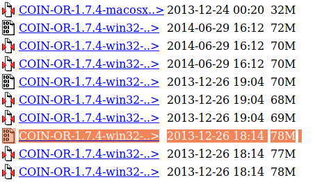

Developer Installation¶
Though we plan to bundle all this together in the future, for now, to use PSST, you must install:
Python2.7 or 3.5+ (preferably the distribution from Continuum Analytics)GitPSSTsource code- The additional Python packages
GraphvizandScipy - A mixed-integer solver like CBC
Installing the proper Python¶
Python is a free, open source language that can be downloaded from
Python.org. Python comes with a
package manager called Pip which allows you to download pacages to
gain extended functionality.
However, we recomend that you do not use the default distribution of Python, but rather, install the Miniconda (or Anaconda) distribution from Continuum Analytics.
Why? Many of the Python packages used for scientific applications, like Numpy and Scipy, are written in a mixture of pure Python plus other, lower-level languages, like C or Fortran. Anaconda comes with many of these packages already installed. You don’t need all of them, which is why we recomend Miniconda instead of Anaconda. Both Anaconda and Miniconda come with an alternative package manager,conda,which lets you install them with greater ease and reliability than when usingpip.For packages written entirely in Python, you should still usepipto install.
Python 2 or Python 3?
PSST should be fully compatible with Python 2.7, but we recomend Python 3 as it is faster, cleaner, more robust, and, well, the future!
Download the Miniconda distribution of Python 3¶
- Find the download here
- During installation, mark that you do want to add Miniconda to your path
- On Windows, we recomend installing Miniconda directly under your C: directory
Verify your installation.¶
Open a command line console (“command prompt” on Windows or “Terminal” on Mac/ Ubuntu) and type:
- macOs and Linux –
which python - Windows –
where python
You should see output like:
- macOs and Linux –
/home/username/miniconda3/bin/python - Windows –
C:\Miniconda3\python.exe
You should also be able trun python from the command line by simply
typing python or python3.
You should see something like this:

python REPL screenshot
Troubleshooting¶
If this isn’t working, you might still need to add the Miniconda distribution to your system “Path” or place it before an existing installation of Python in your path.
Look at your path from the command line by typing:
- macOs and Linux –
echo $PATH - Windows –
echo %PATH%
Here are some tips from docs.continuum.io/:

Screenshot of Anaconda help page
The process is similar if you’re on Windows. Try uninstalling and
reinstalling, or manually add the Miniconda executable to your path, by
going into
Computer > Properties > Advanced System Settings > Environment Variables
and then adding the path to your miniconda installation (something like
c:\.....\anaconda) near the front of your PATH variable.
Installing Git¶
If you don’t already have Git installed on your computer, you should install it. This is version control software, which will make it easier to install and update your version of PSST.
On Windows
Install Git Bash, and then launch this application from the start menu.
You can use this application in place of the default command line console, ‘Command Prompt.’ It gives you access not only to git commands (like
git cloneandgit bashbut also to most folder navigation commands that macOS/linux users have access to. That is,pwdto see the current directory,cdto change directory,lsto see the files and folders you can access from your current directory, and more.
On macOS/ Linux
- You should already have git installed. If you wish, you could follow these steps to upgrade it.
Installing PSST¶
Open your command prompt console (
Terminalon linux/macOS orGit Bashon Windows)Navigate to the directory in which you want to store the code. You may wish to create a
GitReposdirectory in an easy-to-reach directory. For instance:cd ~ mkdir GitRepos cd GitRepos
Enter following to clone the project, then install it.
git clone https://github.com/power-system-simulation-toolbox/psst.git cd psst pip install -e .
Installing Additional Libraries¶
A few packages/libraries don’t get installed with the previous command, you will have to add them manaully. These code include:
Scipy¶
conda install scipy
Jupyter¶
conda install jupyter
GraphViz¶
On Windows
pip install graphviz
On Mac
brew install graphviz --with-gts
pip install graphviz
pip install pygraphviz
On Ubuntu
To install Graphviz with gts:
- Remove any existing installation with
conda uninstall graphviz. (If you did not install with Conda, you might need to dosudo apt purge graphvizand/orpip uninstall graphviz). - run
sudo apt install libgts-dev - run
sudo pkg-config --libs gts - run
sudo pkg-config --cflags gts - Download graphviz-2.40.1.tar.gz from here
- Navigate to directory containing download, and extract with
tar -xvf graphviz-2.40.1.tar.gz(or newer whatever the download is named.) cdinto extracted folder (iecd graphviz-2.40.1) and runsudo ./configure --with-gts- Run
sudo makein the folder - Run
sudo make installin the folder - Reinstall library using
pip install graphviz
Note: It is possible you will get an error pertaining to strings vs. bytes. If so, you can edit a file in the graphviz pacakge by hand.
Installing a solver¶
Finally, you need a linear programming (LP) and mixed integer programming (MIP) solver to solve optimization problems. Any one will due. You can install multiple, and specify which you want to use in the psst code.
Installing COIN/CBC solver¶
There are some install instructions here. These procedures seem to work best:
On Windows
- Install the most recent binary of COIN-OR from this list, ie 
- Add
:/c/Program Files (x86)/COIN-OR/1.8.0/win32-msvc12/binto the computer’s path. - You may need to restart your computer.
On MacOS
brew tap coin-or-tools/coinor
brew install cbc
On Ubuntu
conda install -c conda-forge coincbc
Installing GLPK solver¶
On Ubuntu
sudo apt-get install glpk-doc glpk-utils libglpk-dev
On MacOS
brew install glpk